All 7 reference pages combined in skill-read order. M3 sable + sage + info-blue · Roboto Flex + Roboto Serif · opt-in mode.
Locked tokens — canvas, palette, type, spacing, shadows, animation.
Deliverable 01 · Foundations
Material mode owns its own design tokens. Every reference page loads _tokens.css first (M3 color roles, surface tiers, type scale, spacing, shape, elevation, motion, plus M3 primitive classes .md-card / .md-chip / .md-status / .md-btn / .md-tabs / .md-seg / .md-list) and then _shared.css (doc-site chrome plus the 8 diagram-specific md-card--service-* extensions). Both files live alongside this page in material/. The closed list below names every token the generator may reference and every M3 primitive class the generator may compose.
Every diagram ships in two flavors — light (M3 warm cream canvas) and dark (M3 near-black canvas). The two share everything structural: viewBox, layout, type roles, spacing, shape, motion, animation classes, connector geometry, manifest pins. They differ only in color values. The contract is identical to the Pixel mode — only the token namespace and the font pair differ.
Every theme-dependent token uses the same name across themes — the value is rewritten by the body.light rule block (see v2-m3.css). Theme-agnostic tokens (spacing, type sizes, shape, motion durations, viewBox) are defined once at :root. The Material mode is theme-portable by construction: a diagram authored against --md-* renders correctly in either theme without any token swap at the SVG level.
Theme-dependent (value flips at body.light) | Theme-agnostic (single value at :root) |
|---|---|
--md-surface, --md-surface-dim, --md-surface-brightAll 5 --md-surface-container-* tiersAll 5 --md-on-surface-* ink levels--md-outline, --md-outline-variant, --md-outline-hairAll 6 --md-elev-* shadowsAll 4 --md-on-primary-container / on-secondary / on-tertiary / on-error-container colorsThe 5 tonal-overlay --md-surface-N valuesThe 4 *-container tints (primary, secondary, tertiary, error) |
The 9 base palette colors (--p-sable, …, --p-idle) — identity is identityThe 4 M3 role accents ( --md-primary, --md-secondary, --md-tertiary, --md-error)All 15 M3 type-scale roles (size + line-height + letter-spacing) All 13 spacing tokens ( --md-sp-0..20)All 6 shape tokens ( --md-shape-xs..full)All 6 M3 motion easings + 8 durations The diagram-specific gap extensions ( --ds-gap-*)The 5 diagram animation keyframes / 7 classes |
Inside an emitted SVG, all fills and strokes reference V2 token names via inline style="fill: var(--md-tertiary)" attributes, plus a self-contained <style> block at the top declaring both light- and dark-theme token values keyed off a root-element class. Theme swap is a class flip on the SVG root, not a redraw. Filter ids (cardShadow, cardShadowDark) stay stable across themes; their interior feDropShadow values flip with the theme class.
The skill emits two SVG files per diagram. Step 5 generates one layout; the theme pass applies each token block to produce the two files. Step 6 renders both PNGs and runs the self-review checks against each independently — see SKILL.md §5–7. A multi-diagram set pinned by theme: both in its manifest ships 2 × N SVGs.
prefers-color-scheme); theme-suffix naming includes the mode (.material.light.svg); single-tree color tokens with class-flip theme swap; mode is pinned per-set in the manifest (a proposal is entirely Pixel or entirely Material — never mixed).The diagram's outer geometry is locked. The 1660px viewBox width, the M3 surface gradient as the canvas, and the Roboto Flex / Roboto Serif type pair are non-negotiable across all nine templates — they are the load-bearing brand surface.
| Token | Value | Notes |
|---|---|---|
| --canvas-width | 1660 | Locked viewBox width. Use --canvas-width-wide = 2200 only for explicit landscape three-column overviews — see Templates → freeform. |
| --canvas-bg | url(#bgGrad) | Light: vertical #faf9f6 → #ece8de (--md-surface → --md-surface-dim). Dark: #0d0f12 → #08090b. Always full-canvas <rect> at index 0. |
| --canvas-margin | 56 | Inset from each viewBox edge before any content. M3 8dp grid × 7. Title baseline at 56, first card at 112. |
| --canvas-margin-tight | 40 | Only on dense templates (sequence, data-schema) where every pixel of width matters. |
| --md-font-plain | Roboto Flex | Full stack: "Roboto Flex", "Roboto", system-ui, -apple-system, "Segoe UI", sans-serif. Used for body, labels, monogram, tabular numbers. Variable axis: weight 300–700. |
| --md-font-brand | Roboto Serif | Full stack: "Roboto Serif", ui-serif, Charter, Georgia, serif. Used exclusively for M3 display + headline roles (titles, hero headings, page headings). |
| --md-font-data | Roboto Flex (tnum) | Tabular-numerals variant for token names, metrics, IDs, code. The .t-data class applies font-variant-numeric: tabular-nums. |
Every color is named by its M3 role, not its hex. The 9 base palette colors are theme-agnostic identity tokens — sable means Claude in either theme. The 8 surface-container tiers and 5 ink levels flip per theme. Card identity is communicated by subtle categorical tints (the 8 md-card--service-* extensions defined in _shared.css), each derived from a base palette color mixed into the surface-container at low opacity — the calm-dense observability pattern that distinguishes V2 from Pixel.
These cross every M3 role and every theme. Sable (warm tan) is Claude. Sage (cool teal) is GPT. Info (cool blue) is the tertiary accent — arrows, active states, focus rings. Status colors live alongside.
| Token | Value | Role |
|---|---|---|
| --p-sable | #d4a574 | Claude identity. M3 primary. Warm tan with brown undertone. |
| --p-sable-dim | #8a6d4e | Dimmed sable for muted-Claude states (deferred, idle). |
| --p-sage | #7cc4b8 | GPT identity. M3 secondary. Cool teal. |
| --p-sage-dim | #4f8079 | Dimmed sage for muted-GPT states. |
| --p-info | #6b9cf0 | M3 tertiary. Default arrow + focus ring + active accent. Cool blue. |
| --p-ok | #6fb380 | Healthy / converged / success. |
| --p-warn | #d4a056 | Drift / warning. |
| --p-err | #d96a6a | Errored / failed. M3 error. |
| --p-idle | #5e636d | Idle / queued / muted-status. |
M3 roles map base palette colors to semantic roles (primary, secondary, tertiary, error). Each role has 4 supporting tokens (--md-{role}, --md-on-{role}, --md-{role}-container, --md-on-{role}-container). The role is what the generator references — never the base palette directly.
| Role token | Light value | Dark value | Notes |
|---|---|---|---|
| --md-primary | #d4a574 | #d4a574 | Same as --p-sable across themes. The Claude accent. |
| --md-on-primary | #1f1407 | #1f1407 | Ink on a sable surface — dark brown for AA contrast. |
| --md-primary-container | rgba(212,165,116,0.26) | rgba(212,165,116,0.18) | Tinted background for primary chips, tonal cards. |
| --md-on-primary-container | #3b2810 | #f3deca | Ink on the primary container. |
| --md-secondary | #7cc4b8 | #7cc4b8 | Same as --p-sage. The GPT accent. |
| --md-secondary-container | rgba(124,196,184,0.26) | rgba(124,196,184,0.18) | Tinted background for secondary chips, tonal cards. |
| --md-tertiary | #6b9cf0 | #6b9cf0 | Same as --p-info. The arrow / focus / active accent. |
| --md-tertiary-container | rgba(107,156,240,0.20) | rgba(107,156,240,0.18) | Tinted background for info chips, note callouts. |
| --md-on-tertiary-container | #0a1d44 | #d6e3ff | Ink on info container. |
| --md-error | #d96a6a | #d96a6a | Same as --p-err. |
| --md-warning | #d4a056 | #d4a056 | Same as --p-warn. |
| --md-success | #6fb380 | #6fb380 | Same as --p-ok. |
M3 layers surfaces in eight discrete tiers. Each tier is a step deeper in the visual hierarchy. Cards pick their tier by importance: filled cards sit on surface-container-high, outlined cards sit on surface, the canvas itself is the surface → surface-dim gradient.
| Token | Light | Dark | Notes |
|---|---|---|---|
| --md-surface-dim | #ece8de | #08090b | Deepest tier. Bottom stop of the canvas gradient. |
| --md-surface | #faf9f6 | #0d0f12 | The canvas base. Top stop of the canvas gradient. |
| --md-surface-bright | #ffffff | #21242a | Hero surfaces, the very top of the stack. |
| --md-surface-container-lowest | #ffffff | #0a0c0f | Code blocks, deepest container. |
| --md-surface-container-low | #f5f3ec | #111317 | Doc-card backgrounds. |
| --md-surface-container | #f0ede4 | #14171c | App-bar / rail / default container. The base for service-card tints. |
| --md-surface-container-high | #e9e5d9 | #191c21 | md-card--filled background. |
| --md-surface-container-highest | #e3decf | #21252b | Topmost container tier; md-card--service-neutral background. |
M3 adds a second axis of elevation by mixing the surface-tint (primary by default, secondary in body.tint-secondary) into the surface at 5/8/11/12/14% opacity. Use these when a card needs to feel “primary-flavored” without committing to the saturated md-card--tonal-a treatment. The formula is identical in light and dark — only the surface and tint values flip.
| Token | Formula | Notes |
|---|---|---|
| --md-surface-1 | color-mix(surface-tint 5%, surface) | Lightest overlay. Elevated button backgrounds. |
| --md-surface-2 | color-mix(surface-tint 8%, surface) | Second overlay. |
| --md-surface-3 | color-mix(surface-tint 11%, surface) | Dialog backgrounds. |
| --md-surface-4 | color-mix(surface-tint 12%, surface) | Top-app-bar scrolled state. |
| --md-surface-5 | color-mix(surface-tint 14%, surface) | Deepest overlay. Modal scrim layer. |
Five named ink levels in increasing muteness, plus a decorative tier. The generator picks ink by role: titles use --md-on-surface, body uses --md-on-surface-variant, captions use --md-on-surface-muted, italic legends use --md-on-surface-faint, decorative tick-marks use --md-on-surface-decor.
| Token | Light | Dark | Use for |
|---|---|---|---|
| --md-on-surface | #04060a | #ffffff | Titles, primary text. |
| --md-on-surface-variant | #3a3f47 | #b4bac4 | Body text. |
| --md-on-surface-muted | #4d5159 | #9aa0ac | Captions, secondary, section labels. |
| --md-on-surface-faint | #6f7480 | #7d8290 | Italic legends, tertiary. |
| --md-on-surface-decor | #a8aab0 | #50545d | Decorative strokes, hairline rules. |
| Token | Light | Dark | Use for |
|---|---|---|---|
| --md-outline | #aaa599 | #343941 | Outlined buttons, chips, default M3 outline. |
| --md-outline-variant | #d2cdc0 | #262a31 | Section dividers, group boundaries. |
| --md-outline-hair | #e7e3d9 | #1c1f24 | Hairline (1px) card borders, doc-card edges. |
Reserved for the md-status pill, 5px filled status dots, and the rare semantic line. Never apply status colors to card fills; use the md-card--service-* tints below. The status pill applies color-mix at 16% opacity for the pill background plus full saturation for the text and leading dot.
| Class | Color | Background | State |
|---|---|---|---|
| .md-status--running | #6b9cf0 | color-mix(info 16%, transparent) | Active / running. |
| .md-status--converged | #6fb380 | color-mix(ok 16%, transparent) | Healthy / done. |
| .md-status--drift | #d4a056 | color-mix(warn 16%, transparent) | Warning / drift. |
| .md-status--errored | #d96a6a | color-mix(err 16%, transparent) | Errored / failed. |
| .md-status--idle | #5e636d | color-mix(idle 24%, transparent) | Idle. |
| .md-status--queued | --md-on-surface-faint | --md-surface-container-high | Queued / pending. |
V2 ships five card variants (elevated / filled / outlined / tonal-a / tonal-b). Diagrams need a richer categorical vocabulary — eight service surfaces that each carry an identity by hue. These are defined in _shared.css as extensions to V2: each is structurally an md-card--filled with a color-mix tint at 18–22% opacity. The tint is subtle on purpose — V2's pattern is "calm dense observability," so categorical identity is communicated through hue at low saturation, not through dark saturated dark surfaces (which is the Pixel approach).
| Variant | Background formula | Text color | Use for |
|---|---|---|---|
| .md-card--service-primary | color-mix(primary 22%, surface-container) | on-primary-container | Active agent, primary API, hero element. The "your service" card. |
| .md-card--service-secondary | color-mix(secondary 22%, surface-container) | on-secondary-container | Secondary agent (GPT counterpart), companion service. |
| .md-card--service-sql | color-mix(tertiary 22%, surface-container) | on-tertiary-container | SQL databases (Postgres, MySQL, Cloud SQL). Always paired with the cylinder icon. |
| .md-card--service-secure | color-mix(ok 20%, surface-container) | color-mix(ok 60%, on-surface) | Auth providers, secret stores, gates, harnesses — anything "passing / healthy / secure". |
| .md-card--service-store | color-mix(sable 20%, surface-container) | color-mix(sable-dim 60%, on-surface) | Blob storage (S3, GCS, Azure Blob), file systems, artifact catalogs. |
| .md-card--service-cache | color-mix(warn 18%, surface-container) | color-mix(warn 60%, on-surface) | Cache, in-memory store, Redis. Distinct from queue (slate) to avoid ambiguity. |
| .md-card--service-slate | color-mix(idle 18%, surface-container) | color-mix(idle 70%, on-surface) | Research, analytics, queue / Pub/Sub, anything stream-like. |
| .md-card--service-neutral | --md-surface-container-highest | --md-on-surface | Workers, secondary services, default for unknown-category services. |
M3 ships a 15-role type scale (5 categories × 3 sizes). The diagram skill consumes the full scale, but the canonical mapping is narrow: display for hero stage headlines, headline for diagram titles, title for card titles, body for descriptions, label for chips, status pills, section labels. Roboto Serif renders display + headline; Roboto Flex renders everything else.
| Role | Size / line-height | Letter-spacing | Font · weight | Use for |
|---|---|---|---|---|
| .t-display-l | 57 / 64 | -0.25px | Serif · 400 | Hero stage headlines (rare; freeform only). |
| .t-display-m | 45 / 52 | 0 | Serif · 400 | Headlines on large-format diagrams. |
| .t-display-s | 36 / 44 | 0 | Serif · 400 | Page hero (doc only). |
| .t-headline-l | 32 / 40 | 0 | Serif · 500 | Diagram titles (top-of-canvas, 56px from top). |
| .t-headline-m | 28 / 36 | 0 | Serif · 500 | Section headlines. |
| .t-headline-s | 24 / 32 | 0 | Serif · 500 | Stage subhead. |
| .t-title-l | 22 / 28 | 0 | Flex · 500 | Card titles (primary). |
| .t-title-m | 16 / 24 | +0.15px | Flex · 500 | Card titles (compact). |
| .t-title-s | 14 / 20 | +0.1px | Flex · 500 | Sub-card titles. |
| .t-body-l | 16 / 24 | 0 | Flex · 400 | Card body (large). |
| .t-body-m | 14 / 20 | 0 | Flex · 400 | Card body, default. The diagram-level body. |
| .t-body-s | 12 / 16 | 0 | Flex · 400 | Captions, italic legends, footnotes. |
| .t-label-l | 14 / 20 | +0.1px | Flex · 500 | Chips, button labels. |
| .t-label-m | 12 / 16 | +0.5px / UC | Flex · 500 | Section labels (uppercase). The "USERS" / "PLATFORM" type ribbons. |
| .t-label-s | 11 / 16 | +0.5px / UC | Flex · 500 | Status pills, footnote labels (uppercase). |
.t-data aliasMetric values, IDs, token names, and code use Roboto Flex with font-variant-numeric: tabular-nums. The .t-data class applies this. In SVG, set font-family="'Roboto Flex', system-ui, monospace" plus font-variant-numeric="tabular-nums" directly on the <text> element.
config.toml · SHA b1f8a3c
Roboto Flex is a variable font; M3 uses four discrete weights. Roboto Serif uses the same axis.
| Token | Weight | Use for |
|---|---|---|
| --md-w-regular | 400 | Body, captions, displays. |
| --md-w-medium | 500 | Titles, headlines, labels. The M3 default emphasis weight. |
| --md-w-semi | 600 | Section labels, status pills. |
| --md-w-bold | 700 | Reserved — used only for emphasis inside body prose, never for UI roles. |
M3 layouts are measured on an 8dp grid with a 4dp half-step. The 13 V2 spacing tokens cover everything from icon padding to dialog gutters. Diagrams ride on the same grid but need three larger gap tokens for the wider canvas — declared as --ds-gap-* extensions below.
| Token | Value | Use for |
|---|---|---|
| --md-sp-0 | 0 | Zero / reset. |
| --md-sp-1 | 4px | Icon-to-text micro-gap. M3 half-step. |
| --md-sp-2 | 8px | Inline gap between chip and label. |
| --md-sp-3 | 12px | Card-internal stacking gap. |
| --md-sp-4 | 16px | Default chip-to-chip gap, card title to body. |
| --md-sp-5 | 20px | Card padding-y. |
| --md-sp-6 | 24px | Card padding-x. Default --md-pad-card. |
| --md-sp-8 | 32px | Cluster-to-cluster row gap. |
| --md-sp-10 | 40px | Page padding-y (main column). |
| --md-sp-12 | 48px | Page padding-x (main column). |
| --md-sp-14 | 56px | Hero-top spacing. Title-to-content gap. |
| --md-sp-16 | 64px | Section-to-section gap. Major stage gap. |
| --md-sp-20 | 80px | Page-bottom padding. |
The diagram canvas is far wider than typical M3 UI (1660 vs ~1200). Components that hop a card-to-arrow-to-card chain need looser rhythm than UI components. These three tokens are diagram-only — V2 itself doesn't use them. They're declared in this foundations document as values diagram authors reference when laying out a stage.
| Token | Value | Use for |
|---|---|---|
| --ds-gap-card-arrow | 96px | Horizontal gap between a card edge and the arrow shaft start. Replaces M3's 24–32px coupling, which reads cramped at 1660 wide. |
| --ds-gap-stage | 120px | Vertical gap between two stages in a numbered-step layout. Wider than --md-sp-16 (64) to keep the numbered tokens visually distinct. |
| --ds-gap-section | 72px | Gap between two unrelated sections of a single diagram (e.g. a context block and its trust-boundary box). |
V2 supports body.compact (M3 compact density) which tightens padding, gap, and row-height tokens. Diagrams ignore this — every diagram authoritatively renders in M3 comfortable density. The doc reference pages may use compact for screenshot composition, but emitted SVGs do not.
M3 ships six discrete shape values plus a pill (--md-shape-full). The diagram skill uses every step:
| Token | Value | Use for |
|---|---|---|
| --md-shape-xs | 4px | Inline code chips, focus rings on text. |
| --md-shape-sm | 8px | Outlined chip, group-label chip. |
| --md-shape-md | 12px | Default card radius. Every md-card and md-card--service-* uses this. |
| --md-shape-lg | 16px | Frames, FAB, large containers, doc-card outer. |
| --md-shape-xl | 28px | M3 dialog, hero sheet. |
| --md-shape-full | 9999px | Pills: chips, status, buttons, segmented control. |
M3 elevation runs 0–5. Diagrams use 0–3 in practice: outlined cards sit at 0, filled cards at 1, hero cards at 2, modals at 3. Levels 4–5 are present in the token registry for full M3 coverage (interactive UI surfaces — top-app-bar scrolled state, dialog) but no diagram should reference them. State layers are M3's interaction mechanism — a currentColor overlay sandwiched into ::before, opacity scaled by interaction state (hover 8%, focus 10%, pressed 12%). In emitted SVG, state layers are not rendered (the SVG is static); they exist here for completeness because the doc-site itself uses them.
| Token | Light shadow | Dark shadow | Use for |
|---|---|---|---|
| --md-elev-0 | none | none | Outlined cards, no shadow. |
| --md-elev-1 | 0 1px 2 / 0 1px 3+1 | 0 1px 2 / 0 1px 3+1 (deeper alpha) | Filled card resting state. |
| --md-elev-2 | 0 1px 2 / 0 2px 6+2 | 0 1px 2 / 0 2px 6+2 | Hovered card, default frame. |
| --md-elev-3 | 0 4px 8+3 / 0 1px 3 | 0 4px 8+3 / 0 1px 3 | Hero card (service-primary), FAB. |
| --md-elev-4 | 0 6px 10+4 / 0 2px 3 | 0 6px 10+4 / 0 2px 3 | V2 dialog. Diagrams do not use. |
| --md-elev-5 | 0 8px 12+6 / 0 4px 4 | 0 8px 12+6 / 0 4px 4 | V2 modal scrim layer. Diagrams do not use. |
| Token | Value | Use for |
|---|---|---|
| --md-state-hover | 0.08 | Pointer hover overlay opacity. |
| --md-state-focus | 0.10 | Keyboard focus overlay opacity (paired with focus ring). |
| --md-state-pressed | 0.12 | Active press overlay opacity. |
| --md-state-dragged | 0.16 | Drag overlay opacity. |
State layers are implemented as a ::before pseudo-element on the interactive element: position: absolute; inset: 0; background: currentColor; opacity: 0, ramping to the state-token value on the corresponding pseudo-class. SVG outputs are static and do not render state layers — they're for the doc site only.
/* M3 state-layer pattern */
.thing::before {
content: "";
position: absolute; inset: 0;
background: currentColor;
opacity: 0;
border-radius: inherit;
transition: opacity var(--md-dur-short-3) var(--md-easing-standard);
}
.thing:hover::before { opacity: var(--md-state-hover); }
.thing:focus-visible::before { opacity: var(--md-state-focus); }
.thing:active::before { opacity: var(--md-state-pressed); }M3 motion has two dimensions: easing (6 named curves) and duration (8 named scales, 50ms → 500ms). These govern interaction transitions — hover fades, button presses, transitions between states. The diagram skill consumes them for the doc site, but emitted SVGs need a separate vocabulary for content animations (the calm 1–6s loops a running-system diagram uses to convey "running"). Both vocabularies are below.
| Token | Curve | Use for |
|---|---|---|
| --md-easing-emphasized | cubic-bezier(0.2, 0, 0, 1) | M3 default — emphasized transitions (modals, large state changes). |
| --md-easing-emphasized-decel | cubic-bezier(0.05, 0.7, 0.1, 1) | Element entering the screen. |
| --md-easing-emphasized-accel | cubic-bezier(0.3, 0, 0.8, 0.15) | Element leaving the screen. |
| --md-easing-standard | cubic-bezier(0.2, 0, 0, 1) | Standard — small in-place changes (chips, buttons). |
| --md-easing-standard-decel | cubic-bezier(0, 0, 0, 1) | Standard decelerating. |
| --md-easing-standard-accel | cubic-bezier(0.3, 0, 1, 1) | Standard accelerating. |
| Token | Value | Use for |
|---|---|---|
| --md-dur-short-1 | 50ms | Selection highlight, focus ring fade. |
| --md-dur-short-2 | 100ms | Small state changes. |
| --md-dur-short-3 | 150ms | Hover fade — the doc-site default. |
| --md-dur-short-4 | 200ms | Chip selection. |
| --md-dur-medium-1 | 250ms | Card-to-card transitions. |
| --md-dur-medium-2 | 300ms | Dialog open. |
| --md-dur-medium-4 | 400ms | Modal scrim fade. |
| --md-dur-long-2 | 500ms | Large-area transitions. |
M3 focus is a 3px solid ring in color-mix(tertiary 80%, transparent), offset by 2px from the element edge. The diagram skill consumes this for the doc site (the rule is in v2-m3.css). Emitted SVGs are static and have no focus state.
| Token | Value | Notes |
|---|---|---|
| --md-focus-ring | 3px solid color-mix(tertiary 80%) | The :focus-visible outline. |
| --md-focus-offset | 2px | Inset from the focused element's border. |
Diagram animations are content animations (loop visibility, 1–6s timing), not interaction transitions (M3 motion, 50–500ms). The two vocabularies serve different purposes; merging them would force calm loops into 500ms, wrong for the use case. The keyframe with literal colors (tick) uses V2 palette tokens (--p-ok and its lifted sibling).
| Class | Keyframe | Use for |
|---|---|---|
| .anim-ring | rotateDash · 4s linear infinite | Rotating dashed ring around an active processor card. Conveys "running." |
| .anim-ring-slow | rotateDash · 6s linear infinite | Slower variant for secondary processors. |
| .anim-pulse | pulse · 1.8s ease-in-out infinite | Live status dot, "online" indicator. Opacity 0.7 → 1. |
| .anim-tick | tick · 2s ease-in-out infinite | Color shift on a status dot to signal periodic check. Interpolates between V2 ok-green tones. |
| .anim-caret | caret · 1s steps(2) infinite | Terminal-style blinking caret. Use only inside a mono card. |
| .anim-loop | loopPulse · 3.2s ease-in-out infinite | Soft opacity pulse on a feedback-loop arc. Subtle. |
| .anim-motion-dot | animateMotion · stagger via begin= | Flowing dots along a defined motion path. Counts as one class regardless of dot count. |
<style>
@keyframes rotateDash { from { stroke-dashoffset: 0; } to { stroke-dashoffset: -60; } }
@keyframes pulse { 0%,100% { opacity: 0.7; } 50% { opacity: 1; } }
@keyframes tick { 0%,100% { fill: #6fb380; } 50% { fill: #8ac99c; } } /* --p-ok → lifted sibling */
@keyframes caret { 0%,100% { opacity: 0.85; } 50% { opacity: 0; } }
@keyframes loopPulse { 0%,100% { opacity: 0.45; } 50% { opacity: 0.85; } }
.anim-ring { animation: rotateDash 4s linear infinite; }
.anim-ring-slow { animation: rotateDash 6s linear infinite; }
.anim-pulse { animation: pulse 1.8s ease-in-out infinite; }
.anim-tick { animation: tick 2s ease-in-out infinite; }
.anim-caret { animation: caret 1s steps(2) infinite; }
.anim-loop { animation: loopPulse 3.2s ease-in-out infinite; }
</style>prefers-reduced-motion — V2 mandates it, and Material-mode diagrams inherit the rule. The V2 production CSS already has the @media (prefers-reduced-motion: reduce) block that disables every transition + animation site-wide.All animation keyframes are theme-agnostic — the timing, easing, and shape of every animation is identical across light and dark renders. The tick keyframe's two greens (#6fb380 and #8ac99c) both clear AA contrast against both canvases. No dark-variant keyframe needed.
A proposal ships 3–6 diagrams. The same Postgres must show up as md-card--service-sql in every one. The rules below are the closed list of things the manifest pins. Cross-mode swaps (Pixel ↔ Material) are forbidden within one proposal — see manifest §07.5.
md-card--service-sql"); every subsequent diagram in the same proposal consults it..t-headline-l across the whole set.--ds-gap-card-arrow — it uses --canvas-width-wide instead.theme: both ships both flavors of every figure.Closed primitive library — cards, chips, shapes, lanes, stages, groups, callouts.
Deliverable 02 · Components
The diagram skill composes diagrams from the V2 production primitives (md-card / md-chip / md-status / md-btn / md-tabs / md-seg / md-list) plus 8 service-card extensions (md-card--service-*) and a handful of diagram-specific compounds (stages, lanes, groups, callouts). Every component below is theme-portable: the same SVG markup renders correctly on the cream M3 canvas and the near-black M3 canvas via the class-flip theme swap defined in Foundations §01.0.
Every component obeys one rule: shape, layout, type role, and class do not change across themes — only the M3 token values backing the colors. The table below names what flips and what stays.
| Component | Light treatment | Dark treatment | What flips |
|---|---|---|---|
| md-card--filled | Surface #e9e5d9 · elev-1 shadow on cream · ink-1 title | Surface #191c21 · elev-1 deeper-alpha shadow · white title | Background + shadow alpha + ink |
| md-card--outlined | Background = --md-surface · 1px outline-variant · no shadow | Background = dark surface · 1px outline-variant on dark · no shadow | Background + outline color only |
| md-card--service-* | color-mix tint over --md-surface-container · elev-1 | Same formula; values automatically flip per body class | Surface-container + on-* ink |
| md-chip / md-status | color-mix(role 14–24%, transparent) bg · role-saturated text + leading dot | Same formula; M3 role values stay the same hue across themes | On dark, container values shift; chip text stays vivid (role color is theme-agnostic) |
| Arrows · connectors | --md-tertiary (info-blue) at full saturation | --md-tertiary at full saturation (unchanged) | Nothing — info-blue is theme-agnostic and AA on both canvases |
| Callout (QuoteCallout) | Warm --md-tertiary-container bg · info-blue left border · serif italic body | Same pattern, dark container values | Container bg only |
<style> block that declares both light- and dark-theme values keyed off a root class (.theme-light / .theme-dark). The diagram body uses fill="var(--md-...)" attributes throughout. To swap themes, the renderer flips one class — no markup change, no re-layout.Every diagram card — V2 base variant or diagram-specific service variant — follows the same anatomy. The locked slots are icon top-left (Material Symbols glyph, 36×36 reserved), status top-right (12×12 dot or md-status pill), footer bottom-left (Roboto Serif italic legend). Title and body live in the central content well. Padding follows --md-pad-card (24px) on x and --md-pad-card-y (20px) on y.
| Card size | Width × height | Use for |
|---|---|---|
| compact | 200 × 90 | Worker / secondary card. Single-line title + footer. |
| standard | 240 × 140 | Default. Title + 2-line body + footer. |
| tall | 240 × 220 | When a card carries 3+ body lines or a sub-list. |
| wide | 360 × 140 | Hero card / primary service. Title + 3-line body. |
13 total card variants: 5 V2 base + 8 diagram-specific service surfaces. The V2 base variants come directly from v2-m3.css. The 8 service variants are defined in _shared.css as extensions to V2 — each is structurally an md-card--filled with a color-mix tint applied over --md-surface-container.
| Variant | Background | Border | Shadow | Use for |
|---|---|---|---|---|
| .md-card--elevated | --md-surface-1 (5% tint) | none | --md-elev-1 | Subtle lift; ambient panels. |
| .md-card--filled | --md-surface-container-high | none | none | Default content card. |
| .md-card--outlined | --md-surface | 1px --md-outline-variant | none | User / actor cards (semantically lighter than service cards). |
| .md-card--tonal-a | --md-primary-container (sable tint) | none | none | Claude-attributed content. |
| .md-card--tonal-b | --md-secondary-container (sage tint) | none | none | GPT-attributed content. |
Each is structurally an md-card--filled with a color-mix tint at 18–22% opacity over --md-surface-container. The tint communicates the service category by hue, without committing to a saturated dark fill. Paired text colors use on-*-container for AAA contrast.
The 8 variants are documented with their exact color-mix formulas in Foundations §01.2 · "Diagram-specific extensions". Diagrams pick by service category, never by aesthetics.
The V2 production codebase ships several composed components (a BrandMark primitive, an AgentStrip compound). When a diagram represents an agent identity or a service branding moment, the skill uses these patterns verbatim — never invents variants.
Standalone SVG primitive. Renders the official Anthropic sunburst or OpenAI rosette glyph at a given size, in either solid (filled) or ghost (currentColor stroke) variant. In diagrams, use solid at 16–24px inside md-card--tonal-a (Claude) / md-card--tonal-b (GPT). Use ghost when overlaying on a saturated card surface.
shared.jsx::BrandMark({ name, size = 16, variant = 'solid' })Composed row primitive used wherever an "agent" identity needs to be shown: a card showing Claude or GPT as the lead, with a tokens counter, cost, and live status pill. In diagrams, render as a single-line strip near the top of the agent's card. Left side: monogram (BrandMark) + name + model id. Right side: tokens · cost · status pill.
shared.jsx::AgentStrip({ agent, name, model, tokens, cost, status, live })M3 chips, status pills, and assorted small-form callouts. The diagram skill uses three: md-chip (default M3 pill, 32dp height) for assist/filter chips, md-chip--sm (24dp) for inline labels, and md-status (22dp) for the live-state pill. Each is theme-portable via M3 role tokens.
| Class | Height | Background | Use for |
|---|---|---|---|
| .md-chip | 32dp | transparent · 1px outline | Default M3 assist chip. Identity labels next to cards. |
| .md-chip--selected | 32dp | secondary-container | Filter chip in active state. |
| .md-chip--filter-a | 32dp | primary-container | Claude-attributed filter. |
| .md-chip--sm | 24dp | same as base | Inline label inside a card / group boundary chip. |
The status pill is M3's attention-badge pattern: a 22dp pill with a 6dp leading dot (in currentColor), the label in uppercase .t-label-s (11px), color-mixed background at 16–24% opacity over transparent. Six pre-defined states cover every status the skill emits.
| Class | Color (text + dot) | Background |
|---|---|---|
| .md-status--running | #6b9cf0 (info) | color-mix(info 16%, transparent) |
| .md-status--converged | #6fb380 (ok) | color-mix(ok 16%, transparent) |
| .md-status--drift | #d4a056 (warn) | color-mix(warn 16%, transparent) |
| .md-status--errored | #d96a6a (err) | color-mix(err 16%, transparent) |
| .md-status--idle | #5e636d (idle) | color-mix(idle 24%, transparent) |
| .md-status--queued | --md-on-surface-faint | --md-surface-container-high |
.anim-pulse over the leading dot (see Foundations §01.7). The md-status--running pill is the most common live pairing.Six shape primitives the diagram skill draws when the geometry isn't a card: circle, pill, diamond, hexagon, star, note. Each obeys M3 stroke and radius conventions. The pill primitive is visually identical to md-chip--sm.
| Primitive | Use for |
|---|---|
| circle | Decision points, junctions, terminator dots. |
| pill | Inline label inside a card (same as md-chip--sm). |
| diamond | Branching decision (event-driven flow templates). |
| hexagon | External service / integration point (cell-of-influence). |
| star | Reserved for sequence-template milestones. Use sparingly. |
| note | Aside, fyi, deferred-item card. Warm color-mix(warn 14%, surface) tint and warn-bordered. |
For multi-stage pipelines (event-driven flow, deep-research, partner-vetting). Two tokens: a numbered stage token (36 diameter circle with a centered numeral) and a stage divider (2px dashed horizontal rule). Both consume V2 tokens — the numbered token uses --md-tertiary for fill, white for the numeral.
| Token | Geometry | Colors |
|---|---|---|
| stage.numbered-token | 36 dia circle | fill --md-tertiary · numeral white · 14/600 Roboto Flex |
| stage.divider | 2px stroke · dashed 6,4 | --md-outline-variant |
For sequence and event-driven flow templates. Three tokens: a lane header (an md-card--filled sized to 240 wide × 56 tall, containing the actor label), a vertical lane line (1px dashed --md-outline-variant), and an activation box (12px wide solid surface-gradient overlay marking when the actor is active).
| Token | Geometry | Tokens |
|---|---|---|
| lane.header | md-card--filled · 240 × 56 | --md-surface-container-high · .t-title-s label |
| lane.vertical | 1px dashed line | --md-outline-variant · stroke-dasharray 4,4 |
| lane.activation-box | 12 wide · solid | --md-tertiary · opacity 0.4 |
For system-context, infrastructure, and connector-map templates. Two tokens: a group boundary (a dashed rounded rect enclosing a logical region) and a group label (an md-chip--sm anchored to the boundary's top-left). Trust boundaries use --md-tertiary (info-blue); neutral region boundaries use --md-outline-variant.
| Token | Variant | Tokens |
|---|---|---|
| group.boundary.trust | dashed rect | stroke --md-tertiary · 1.5px · radius 20px · stroke-dasharray 6,4 |
| group.boundary.neutral | dashed rect | stroke --md-outline-variant · 1.5px · radius 20px · stroke-dasharray 6,4 |
| group.label | md-chip--sm · top-left | bg --md-surface · stroke 1px --md-tertiary (trust) or --md-outline (neutral) · label uppercase 0.4px tracking |
For asides, footnotes, and the canonical "deferred / not yet built" treatment. The callout follows V2's QuoteCallout pattern: a left-bordered card with Roboto Serif italic body, muted surface-container background, and accent color tinted to the role being called out. Trust callouts use --md-tertiary; sable callouts (Claude-attributed) use --md-primary; sage callouts (GPT-attributed) use --md-secondary.
claude-opus-4-7.| Variant | Border color | Background | Use for |
|---|---|---|---|
| callout.note.trust | --md-tertiary | color-mix(tertiary 6%, surface) | Trust boundary commentary. |
| callout.note.claude | --md-primary | color-mix(primary 8%, surface) | Claude-attributed aside. |
| callout.note.gpt | --md-secondary | color-mix(secondary 8%, surface) | GPT-attributed aside. |
| callout.note.deferred | --md-warning | color-mix(warn 14%, surface) (warm-tint) | "Not yet built" / v2 stub treatment. |
Every diagram closes with a single-line legend in .t-body-s (12/16), --md-on-surface-faint ink, separated by middle-dots. It lives at the canvas bottom, anchored to --canvas-margin (56px) from each edge. The legend itemizes only the visual conventions used in that diagram (e.g. "dashed = async · solid = sync · ring = running"), never the data.
The closed list. A diagram may only compose from these. Total: 5 V2 base cards · 8 service-card extensions · 4 chip forms · 6 status pills · 6 shape primitives · 2 stage tokens · 3 lane tokens · 3 group tokens · 4 callout variants · 1 legend · 2 V2 composed components — 44 named building blocks.
| Group | Count | Members |
|---|---|---|
| Card · V2 base | 5 | elevated · filled · outlined · tonal-a · tonal-b |
| Card · diagram service | 8 | primary · secondary · sql · secure · store · cache · slate · neutral |
| Chip · M3 base | 4 | md-chip · md-chip--selected · md-chip--filter-a · md-chip--sm |
| Status pill | 6 | running · converged · drift · errored · idle · queued |
| Shape primitive | 6 | circle · pill · diamond · hexagon · star · note |
| Stage | 2 | stage.numbered-token · stage.divider |
| Lane | 3 | lane.header · lane.vertical · lane.activation-box |
| Group | 3 | group.boundary.trust · group.boundary.neutral · group.label |
| Callout | 4 | trust · claude · gpt · deferred |
| Legend | 1 | legend.canvas-bottom |
| V2 composed | 2 | BrandMark · AgentStrip |
_shared.css for css-level additions) — then use it. Improvising an inline shape in one diagram fragments the system.Arrow taxonomy, curves, gutters, label zones, density caps.
Deliverable 04 · Connectors
Connector geometry is identical between Pixel and Material modes — the rules for curve modes (L/Q/C/O), lane gutters, label zones (A/B/C), crossing priority, clearance, and density caps are mode-agnostic. Only the stroke colors and marker fills differ. Material connectors use the theme-portable info-blue accent (--md-tertiary · #6b9cf0) for primary flow, V2 surface-muted ink for secondary, and the V2 status palette (--p-ok / --p-warn / --p-err) for semantic paths.
Arrow geometry is theme-agnostic — curve rules, marker dimensions, label zones, clearance values are identical between light and dark. Arrow color swaps per theme via the foundations §01.2 status palette. Both marker sets ship in <defs> per file; the theme-pass picks which to reference.
| Property | Light theme | Dark theme |
|---|---|---|
| Primary arrow stroke | #6b9cf0 (accent) | #6b9cf0 (same — theme-portable) |
| Secondary arrow stroke | #6f7480 (ink-4) | #9aa0ac (ink-3-dark) |
| Mirror / return stroke | #d4a056 (warn / amber) | #d4a056 (theme-portable) |
| Error path stroke | #d96a6a (err) | #d96a6a (theme-portable) |
| Connector label color | matches stroke | matches stroke |
| Connector subtitle color | #6f7480 (ink-4) | #7d8290 (ink-4-dark) |
<defs> per fileEvery emitted SVG defines all marker ids it uses, with theme-appropriate fills baked in. The id (arrowAccent, arrowGrey, etc.) is stable across themes; the marker body rewrites per theme. This keeps connector authoring theme-unaware — marker-end="url(#arrowAccent)" works in both files.
<!-- light theme markers -->
<marker id="arrowAccent" markerWidth="8" ...><path d="M0,0 L0,6 L8,3 z" fill="#6b9cf0"/></marker>
<marker id="arrowGrey" ...><path ... fill="#6f7480"/></marker>
<!-- dark theme — same ids, swapped fills -->
<marker id="arrowAccent" ...><path ... fill="#6b9cf0"/></marker> # unchanged
<marker id="arrowGrey" ...><path ... fill="#9aa0ac"/></marker>Eight arrow types. The generator picks by what the arrow means, not by aesthetics. A new flavor of arrow doesn't get invented — it remaps to the closest semantic match.
| Type | Stroke · width · dash | Marker | Use for |
|---|---|---|---|
| solid-primary | accent · 1.8 · none | arrowAccent | Default flow. User-initiated path, request/response, primary data path. |
| dashed-handoff | ink-4 · 1.3 · 4,3 | arrowGrey | Async hand-off, scheduled job, background sync. Anything the system does on its own schedule. |
| mirror-secondary | amber · 1.6 · none | arrowAmber | Mirror / replication / write-through path. Secondary copy. |
| sync-call | accent · 1.8 · none | arrowAccent both ends | Synchronous request that returns — caller waits. Solid line with arrow at both ends. |
| return | accent · 1.3 · 5,4 | arrowAccentSm | Return value of a sync-call (when shown explicitly). Dashed-thinner to read as "back-trip." |
| async-event | ok-green · 1.8 · none | arrowGreen | Event publication. Producer → topic. Implied fire-and-forget. |
| bidirectional | accent · 1.8 · none | arrowAccentSm + arrowAccent | Two-way data flow. Both ends carry arrowheads. |
| error-path | err · 1.8 · 6,3 | arrowRed | Error / fallback / DLQ path. Dashed-thick in error red. |
Seven named markers — one per colored stroke. All markers share the same viewBox geometry (the arrowhead is identical in shape); only the fill differs. Naming convention: arrow<Tint> for the standard 8×8 size, arrow<Tint>Sm for the 7×7 small variant.
| Marker id | Size | Fill | Used by |
|---|---|---|---|
| arrowAccent | 8 × 8, refX=6 | #6b9cf0 (light + dark) | solid-primary, sync-call (end), bidirectional (end) |
| arrowAccentSm | 7 × 7, refX=5 | #6b9cf0 | return, sync-call (start), bidirectional (start) |
| arrowGrey | 8 × 8, refX=6 | #6f7480 light / #9aa0ac dark | dashed-handoff |
| arrowAmber | 8 × 8, refX=6 | #d4a056 (theme-portable) | mirror-secondary |
| arrowGreen | 8 × 8, refX=6 | #6fb380 (theme-portable) | async-event |
| arrowRed | 8 × 8, refX=6 | #d96a6a (theme-portable) | error-path |
| arrowSable | 8 × 8, refX=6 | #d4a574 (theme-portable) | reserved for Claude-tagged flows |
<!-- canonical marker block — include all you reference -->
<marker id="arrowAccent" markerWidth="8" markerHeight="8" refX="6" refY="3" orient="auto">
<path d="M0,0 L0,6 L8,3 z" fill="#6b9cf0"/>
</marker>Four curve modes. Pick by the geometry of the source-to-target relationship, not by aesthetic preference. Most diagrams are dominated by L and Q; orthogonal (O) is reserved for dense regions where C would collide with itself.
| Mode | Path d | When to use |
|---|---|---|
| L · straight | M x1 y1 L x2 y2 | Default. Source and target are roughly axially aligned (same row or same column). |
| Q · single bend | M x1 y1 Q cx cy x2 y2 | Source and target offset diagonally. Single control point at the inflection. |
| C · S-curve (rare) | M x1 y1 C c1x c1y c2x c2y x2 y2 | Source and target offset and require the line to "bow out" past an obstruction. Two control points. |
| O · orthogonal | M x1 y1 H mx V my H x2 (rounded corners with --bend-radius arcs) | Dense region with 3+ arrows sharing a gutter band. Right-angle segments with small (6px) arc corners. State-machine return-loops use this. |
--bend-radius 24px. Below this radius the curve reads as a kink, not a curve. If geometry won't allow 24px, switch curve modes (L → Q → O) rather than tightening the bend.When multiple arrows run between the same source/target pair, they share a gutter — a stack of parallel paths separated by --lane-gutter (16px). Three or fewer parallel arrows: stack them. Four or more: collapse to a single trunk arrow + chip.count.
| Parallel count | Treatment | Notes |
|---|---|---|
| 1 | Single arrow, labeled normally | Trivial case. |
| 2 | Two arrows, 16px gutter, each labeled | Top label in zone A, bottom in zone B (italic). |
| 3 | Three arrows, 16px gutters, each labeled | Density warning — consider whether the third belongs. |
| 4+ | Single trunk arrow + chip.count showing the count, e.g. "×5 messages" | Drawing 4+ parallel arrows is a content failure dressed as design. |
Every connector label sits in one of three zones. Labels are never rotated 90°. If a horizontal label doesn't fit, the line jogs to make room — or the label becomes a chip.label on the source card. No exceptions.
| Zone | Position | Style | Use for |
|---|---|---|---|
| A · above-line | 12px above line center | 10px, 600 weight, ALL CAPS, 0.8 letter-spacing, color matches stroke | Primary verb / action: "CREATES", "VALIDATES", "NOTIFIES" |
| B · below-line | 12px below line center | 9px, 400 weight italic, ink-4 | Subtitle / qualifier: "json blob · 6kb · signed" |
| C · on-line pill | centered on line, white fill | 11px chip with 9999px corners, ink-1 text on white | Curve midpoints where above/below would collide. Pill creates its own contrast against the line. |
chip.label on the source card, (3) use a zone-C pill at the bend. Never rotate.Every arrow's M x y must start at a defined source card edge (with --arrow-stub 8 inset). Every arrow's marker-end must land at a defined target card edge. An arrow that starts in a gutter or ends in empty space is an "orphan" — the reader can't tell what it's connecting.
group.boundary rather than to empty space.Crossings happen. The contract: secondary jogs over primary; shorter jogs over longer. Jog arc is 6px. Maximum 3 crossings per diagram — beyond that, restructure the layout.
| Rule | Why |
|---|---|
| Primary (solid-primary, sync-call, bidirectional) wins — secondary (dashed-handoff, mirror-secondary) jogs over it. | The primary flow is what the reader is tracing; making it jog interrupts the read. |
| Among same-priority arrows: shorter jogs over longer. | Shorter arrows have less linear momentum; jogging them is visually cheaper. |
| Jog arc is exactly 6px (small semicircle bumping over the line being crossed). | Tight enough to read as a crossing-skip, not as a curve change. |
| Maximum 3 crossings per diagram. | More than 3 = the layout is the problem, not the arrows. Restructure into lanes or split. |
Clearance is the minimum perpendicular distance between an arrow and an unrelated card it passes near. Density caps are the maximum number of arrows / connections per card before the diagram is "too dense" to read.
| Constraint | Value | Notes |
|---|---|---|
| --arrow-clearance | 16 | Min perpendicular distance from any arrow segment to any unrelated card edge. |
| --arrow-stub | 8 | Arrow starts 8px inside its source card edge so the arrowhead has visual air on the target side. |
| --lane-gutter | 16 | Between parallel arrows in same gutter. |
| max arrows per card | 6 | Above 6, the card is over-connected — split it or remap to a hub-and-spoke. |
| max parallel arrows per pair | 3 | Above 3, collapse to trunk + chip.count. |
| max cards per diagram | 18 | Above 18, the diagram tries to do too much — split into multiple figures. |
| max arrow types per diagram | 4 | Of the 8 taxonomy types, no diagram should use more than 4 different ones. |
| max surface gradients per diagram | 5 | Of the 7 categorical surfaces, no diagram should use more than 5 different ones. |
| max crossings per diagram | 3 | Above 3, restructure. |
| max animation classes per diagram | 3 | Calm aesthetic — see foundations §01.7. |
When a draft diagram hits any of the above caps, the answer is almost always to split the diagram rather than push the cap. Diagrams are cheap; readers' attention isn't.
Before any diagram is finalized, walk this list. Every "yes" earns the connector its place in the diagram; any "no" means the connector is wrong or the diagram is too dense.
--arrow-clearance 16px from any unrelated card.Most emitted SVGs are static. When a connector does animate (a flowing dot along the path, a pulse on the marker arrowhead), the timing leans on the diagram-specific animation registry, not M3 interaction motion. The two vocabularies are separated by purpose:
| Concern | Vocabulary | Source |
|---|---|---|
| Content animation | 5 keyframes / 7 classes — rotateDash, pulse, tick, caret, loopPulse, plus animateMotion for flowing dots | foundations §01.7 · animation registry |
| Interaction motion | M3 easings (--md-easing-emphasized, --md-easing-standard, …) + 8 durations (--md-dur-short-1 50ms → --md-dur-long-2 500ms) | foundations §01.7 · motion |
Diagrams are static images; emitted SVGs never use M3 interaction motion (50–500ms is too fast for content). The doc-site uses M3 motion for hovers; SVGs only use the diagram animation registry. When the docs preview a flow with a moving dot, the dot rides an animateMotion element with dur="3.2s" matching the loopPulse cadence — calm, not snappy.
@media (prefers-reduced-motion: reduce) guard that disables it. V2's production CSS includes this rule globally; SVGs inherit the behavior when the doc-site is the viewer, but standalone SVGs need their own guard in the embedded <style> block.78 icons across 9 categories + monogram fallback + icon→gradient map.
Deliverable 03 · Icons
Material mode adopts Google's Material Symbols Outlined — the variable icon font shipped with Material 3. Reference pages load it via the Google Fonts CDN. Canonical emitted SVGs pre-convert each glyph to inline <path> data so the output stays self-contained and renders without a network dependency. The curated set below covers ~80 icons across 9 service categories — the closed list a diagram may pick from.
Every icon honors the same 2-pair contract every other component does — same glyph, same size, same stroke, only the color flips. Material Symbols' default render is a single-path glyph in currentColor, so an icon inside a service card inherits the card's text color; an icon inside a free-floating diagram element uses an explicit token (typically --md-tertiary for info / arrows or --md-on-surface-variant for labels).
| Surface context | Light glyph color | Dark glyph color |
|---|---|---|
| md-card--service-primary | --md-on-primary-container (#3b2810) | --md-on-primary-container (#f3deca) |
| md-card--service-sql | --md-on-tertiary-container (#0a1d44) | --md-on-tertiary-container (#d6e3ff) |
| md-card--service-neutral | --md-on-surface (#04060a) | --md-on-surface (#ffffff) |
| md-card--outlined (user card) | --md-on-surface-variant (#3a3f47) | --md-on-surface-variant (#b4bac4) |
| free-floating (connector / decoration) | --md-tertiary (#6b9cf0) | --md-tertiary (#6b9cf0) |
For reference pages and any HTML context, load Material Symbols Outlined via a single <link> against the Google Fonts CSS API. Use the variable-axis form so a single download covers every size and weight the skill emits.
<link rel="preconnect" href="https://fonts.googleapis.com">
<link rel="preconnect" href="https://fonts.gstatic.com" crossorigin>
<link href="https://fonts.googleapis.com/css2?family=Material+Symbols+Outlined:opsz,wght,FILL,GRAD@20..48,300..700,0..1,-50..200&display=swap"
rel="stylesheet">The .ms base class in _shared.css wraps the typographic concern: variable-axis settings, line-height 1, vertical-align middle, user-select none. Size variants (.ms-16, .ms-18, .ms-20, .ms-24, .ms-32) just bump the font-size. To render a glyph: write its name as plain text inside the span.
<span class="ms ms-32">database</span>
<span class="ms ms-24">lock</span>
<span class="ms" style="color: var(--md-tertiary)">hub</span>The closed list. A diagram may only consume icons from this set. New service categories should be mapped to the nearest existing category before adding a new glyph — the smaller the set, the more recognizable each one is.
When a service identity isn't covered by a canonical glyph (rare third-party integrations: Salesforce, Asana, Sentry, etc.), use the extension glyph as a host plus a 2-letter monogram in Roboto Flex 500 overlaid inside. The monogram sits in the host's negative space at 12px size. Color = the surface's text token (e.g. --md-on-tertiary-container inside a sql card).
For each diagram service category, the table below names the canonical Material Symbol glyph and the diagram-skill alias the manifest references. The mapping is pinned once per set and never varies across diagrams in the same proposal — Postgres always uses database, never storage.
| Service category | Material Symbol | Diagram-skill alias | Surface tier |
|---|---|---|---|
| SQL database | database | icon.sql.database | md-card--service-sql |
| NoSQL document store | storage | icon.data.document-store | md-card--service-sql |
| Schema / data model | schema | icon.data.schema | md-card--service-sql |
| Blob storage (S3/GCS) | cloud | icon.store.blob | md-card--service-store |
| File system / artifact | folder | icon.store.file | md-card--service-store |
| Cache / in-memory | bolt | icon.cache.in-memory | md-card--service-cache |
| Queue / pub-sub | sync_alt | icon.slate.queue | md-card--service-slate |
| Stream / data lake | water | icon.slate.stream | md-card--service-slate |
| Search index | search | icon.slate.search | md-card--service-slate |
| Auth / IDP / OAuth | lock | icon.secure.auth | md-card--service-secure |
| Secret / vault | vpn_key | icon.secure.vault | md-card--service-secure |
| Policy / firewall | shield | icon.secure.policy | md-card--service-secure |
| Agent (Claude / GPT) | smart_toy | icon.primary.agent | md-card--service-primary/secondary |
| Inference / model | psychology | icon.primary.model | md-card--service-primary/secondary |
| API endpoint | api | icon.primary.api | md-card--service-primary |
| Hub / central service | hub | icon.primary.hub | md-card--service-primary |
| Worker / generic compute | dns | icon.neutral.server | md-card--service-neutral |
| Container / pod | deployed_code | icon.neutral.container | md-card--service-neutral |
| Function / lambda | function | icon.neutral.function | md-card--service-neutral |
| Person / user | person | icon.user.person | md-card--outlined |
| Admin / root user | admin_panel_settings | icon.user.admin | md-card--outlined |
| External / third-party | extension | icon.external.fallback | md-card--service-store (custom tint) |
| Health monitor | monitor_heart | icon.observ.health | md-card--service-neutral |
| Alert / page | notifications_active | icon.observ.alert | md-card--service-neutral |
| Logs / list | list_alt | icon.observ.logs | md-card--service-neutral |
| Webhook / event | webhook | icon.integration.webhook | md-card--service-slate |
<path> in canonical SVGsAn emitted diagram SVG must be self-contained — viewable in a static image host (GitHub, Notion, a tweet, a PDF) without a network request. Material Symbols are font glyphs, which means they need the font file to render; that's incompatible with the contract. So for each glyph the skill ships in a canonical SVG, pre-convert it to inline <path> data at author time. The reference page above still uses the font for fast browsing.
| Source | How to fetch |
|---|---|
| npm · @material-symbols/svg-400 | Each glyph ships as a standalone SVG. Install: npm install @material-symbols/svg-400. Path data is at node_modules/@material-symbols/svg-400/outlined/<name>.svg. |
| github · google/material-design-icons | Direct URL: https://raw.githubusercontent.com/google/material-design-icons/master/symbols/web/<name>/materialsymbolsoutlined/<name>_24px.svg |
Every Material Symbols glyph SVG follows the same structure: a viewBox="0 -960 960 960" (note the negative Y origin — Material Symbols use a baseline-aligned coord system), a single <path> with the glyph outline in currentColor. To embed in a diagram, scale into the icon slot's 24×24 area and translate to align.
<!-- Source: database (outlined, 400 weight, 24px) -->
<svg viewBox="0 -960 960 960" width="24">
<path d="M480-120q-151 0-255.5-46.5T120-280v-400q0-66 105.5-113T480-840q149 0 254.5 47T840-680v400q0 67-104.5 113.5T480-120Zm0-479q89 0 179-25.5T760-679q-11-29-100.5-55T480-760q-91 0-178.5 25.5T200-679q14 30 101.5 55T480-599Zm0 199q42 0 81-4t74.5-11.5q35.5-7.5 67-18.5t57.5-25v-120q-26 14-57.5 25t-67 18.5Q599-528 560-524t-80 4q-42 0-82-4t-75.5-11.5Q287-543 256-554t-56-25v120q25 14 56 25t66.5 18.5Q358-408 398-404t82 4Zm0 200q46 0 93.5-7t87.5-18q40-11 67-25t32-27v-111q-26 14-57.5 25t-67 18.5Q599-328 560-324t-80 4q-42 0-82-4t-75.5-11.5Q287-343 256-354t-56-25v112q5 13 31.5 26.5t66.5 24.5q40 11 88 18t94 7Z"/>
</svg><!-- in a diagram SVG, inside a card at (cardX, cardY) -->
<g transform="translate(24 20) scale(0.0375)" fill="var(--md-on-tertiary-container)">
<!-- pasted path from the source SVG -->
<path d="M480-120q-151 0-255.5-46.5..."/>
</g>The scale factor 0.0375 maps Material Symbols' 960-unit viewBox to a 36-unit diagram slot. The translate places it at the slot's top-left (24, 20). The fill is a CSS var so the glyph picks up its card's text color.
One-line bash to fetch a glyph's path data into your clipboard:
curl -s "https://raw.githubusercontent.com/google/material-design-icons/master/symbols/web/database/materialsymbolsoutlined/database_24px.svg" \
| grep -oE 'd="[^"]*"' \
| pbcopyThen paste into the diagram SVG inside the appropriate <g transform=...> wrapper.
Per-template visual contracts (9 templates).
Deliverable 05 · Per-template visual contracts
A visual contract is a four-field card per template: which V2 primitives + diagram extensions it uses, which Material Symbols it pulls from the set, the spacing and layout rules specific to that diagram type, and which arrow types appear. The semantic-side guidance ("what information to capture") stays in the mode-shared template Markdown at references/templates/<name>.md; these contracts replace the visual-side guidance only and apply when Material mode is the active mode.
references/templates/<name>.md files. Mode-specific differences live only in this page (visual contract) and in foundations.html / components.html (token + primitive vocabulary).
Every template's visual contract is theme-agnostic. The primitives composed, icons pulled, spacing and layout rules, arrow types, and anti-patterns are identical between light and dark renders. The only thing that differs per template is the M3 token values referenced by the V2 classes — and those swap mechanically per foundations §01.0.
| Template | Dark behavior |
|---|---|
| layered-architecture | Identical layout. M3 surface tokens flip via body.light rule. Layer dividers use --md-outline-variant. |
| pipeline-flow | Identical layout. Stage tokens use the theme-portable info-blue (--md-tertiary) circle fill in both themes. |
| sequence | Identical layout. Lane lifelines use --md-outline-variant. Activation boxes stay --md-tertiary at 0.4 opacity (theme-portable). |
| system-context | Identical layout. External integration tiles use the same md-card--service-* variants. Trust boundary stroke uses --md-tertiary. |
| data-schema | Identical layout. Entity card chrome lifts via M3 surface-container tier; PK/FK chips use --md-tertiary-container; relationship lines use --md-on-surface-faint. |
| infrastructure | Identical layout. Region/VPC boundaries use --md-outline-variant dashed; provider icons follow Material Symbols mapping (§03.4). |
| event-flow | Identical layout. Topic/queue cards use md-card--service-slate; consumer fan-out arrows use --md-tertiary. |
| connector-map | Identical hub-and-spokes geometry. Spoke monograms follow §03.4 mapping in both themes. |
| freeform | Identical layout. All component primitives follow their own theme behaviors from components §02.0. |
md-card--outlined for outer-edge layers (surfaces, third-parties)md-card--service-* in the appropriate hue for each active layer.t-label-m (uppercase, +0.5px tracking) centered — no boundary box needed
web / smartphone / terminal; API → api or hub; services → smart_toy / dns / function; data → database / cloud / bolt--ds-gap-section (72) between layer baselines--ds-gap-card-arrow (96)
solid-primary downward between adjacent layersmirror-secondary for read-replica / lookupstage.numbered-token for each stage (36 dia, --md-tertiary fill)md-card--service-* hero per stage (240 × 120 fixed, hue by stage role)md-card--service-neutral optional sub-row showing typed outputstage.divider only when an async boundary exists between two stages
schedule for cron stages; function for transform stages; biotech for research stages.--ds-gap-stage (120)solid-primary between stages, single straight linemd-chip--sm on each arrow with the typed output ("validated bytes", "classified records").anim-motion-dot on the main path for "running" feel — counts as 1 animation class
lane.header per actor (240 wide × 56 tall, md-card--filled)lane.vertical dashed lifeline per actor (--md-outline-variant)lane.activation-box when actor is processing (--md-tertiary at 0.4)note primitive for sequence-level annotations (use sparingly)
lane.header — one Material Symbol per actor at top-left. Pick from §03 categories matching the actor type (web, smart_toy, api, database).sync-call for request/response pairs (shows wait)async-event for fire-and-forgetreturn dashed-thinner for explicit return valuesmd-card--outlined for users / actors (left column)md-card--service-primary for the system hub (center, 600 wide)md-card--filled + service-* tint for external integrations (right column, 240×140)group.boundary.trust wrapping the hubAgentStrip inside the hub when an agent identity is the system
person / admin_panel_settings / badgehub / smart_toy / api depending on system kind)extension host glyph on service-card tint backgroundssolid-primary (--md-tertiary) for user-initiated flows (left → hub)dashed-handoff (--md-on-surface-muted) for system-scheduled flows (hub → externals)lock glyph at the boundary
md-card--filled for each entity tablemd-chip--sm for PK / FK / UNIQUE / INDEX markersmd-card--service-neutral for enum / lookup tables (visually subordinate)
database in card header for primary entities (optional — most schemas don't need icons; the row structure tells the story).--md-on-surface-faint rules between FK field and target PKgroup.boundary.neutral for regions / VPCs (dashed, --md-outline-variant)md-card--service-* with the right hue for each compute/storage kindhexagon primitive for cluster members / mesh nodes
dns / deployed_code / function), data (database / cloud / bolt), network (traffic / public / api). Cloud-provider monograms (AWS, GCP, Azure) when the diagram crosses providers.group.boundary.neutral
solid-primary for synchronous trafficasync-event for cross-region replicationmirror-secondary for read-replicas / backup paths
md-card--service-slate for topics / queuesmd-card--filled for producers and consumerscircle primitive (small, --md-on-surface-faint stroke) for partition / shard markers
dns / schedule. Topics: sync_alt / water. Consumers: function or service-specific Material Symbol.async-event from producer → topic (the canonical pub/sub arrow, --p-ok)solid-primary from topic → consumer (consumption is sync from the consumer's view)error-path dashed-red to a DLQ card (if shown)
md-card--service-primary as hub (center)md-card--filled as spokes (radial, 180 × 80)extension fallback host pattern)
hub / api / cloud). Spokes: monograms for third-parties (2-letter initials over extension); known categories use category icons from §03.solid-primary or bidirectional from hub to each spokemd-card--filled 180 × 80).md-card--service-primary for hero, md-card--outlined for actors, group.boundary.* for regions, note primitive for asides
extension-with-monogram for things that don't match.--canvas-width-wide 2200 for landscape three-column overviews18 canonical SVG examples — 9 templates × light + dark.
Deliverable 06 · Canonical worked examples
Each template gets one canonical light + dark pair of the "Partner Vetting" proposal, built only from this mode's foundations, components, icons, and connectors. Compare a Material example side-by-side with its Pixel sibling in pixel/examples.html — the structure is identical; the visual language differs.
system-context anchor pair (§06.1) is the canonical V2-native hand-built reference — it uses md-card--service-* + Material Symbols Outlined + V2 vocabulary throughout. The other 16 SVGs (§06.2–06.9) are mechanical transforms from their Pixel counterparts, pending V2 hand-rebuild. A future release rebuilds each in V2 vocabulary using the §06.1 anchor as the pattern.The platform, the people who use it, and what it touches. 3 columns: users (left), platform hub (center), external systems (right). Trust boundary around the platform. This pair is the V2-native anchor — hand-built in md-card--service-primary for the hub, md-card--outlined for users, md-card--service-{sql,store,secure,cache} for externals, with inline Material Symbols paths.
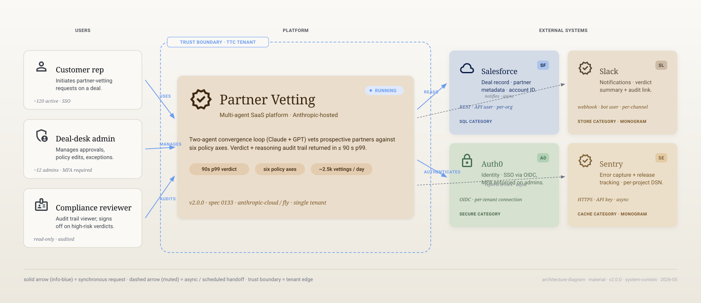
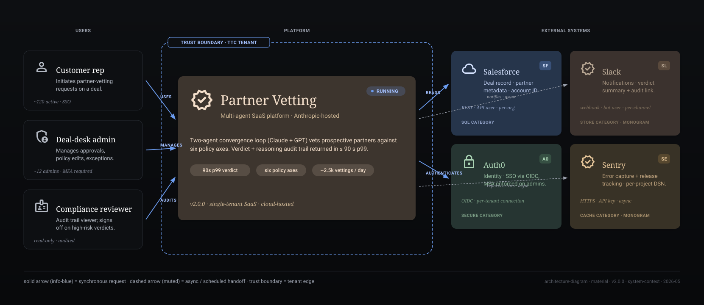
Horizontal layers with handoff arrows downward.
md-card--service-* tinted variants, replace hand-drawn icons with Material Symbols, replace Inter with Roboto Flex / Roboto Serif.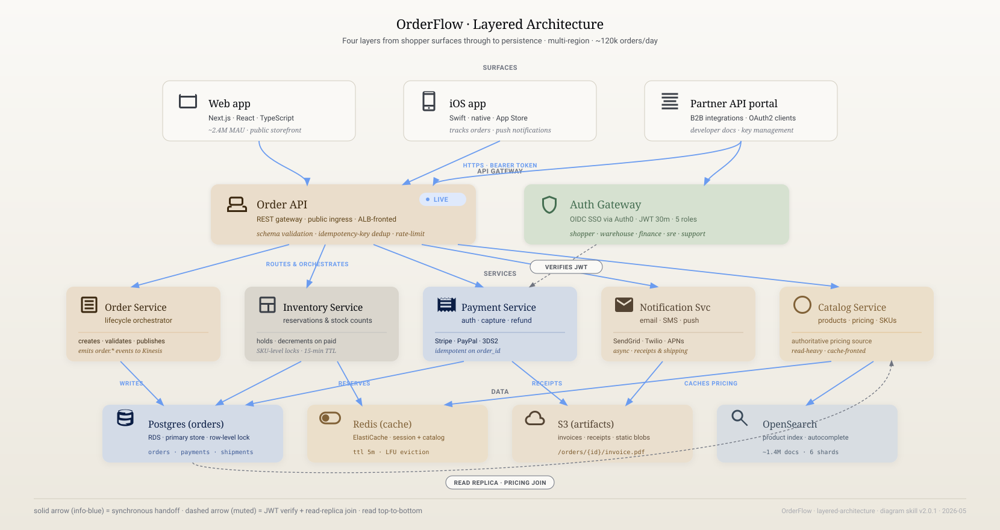
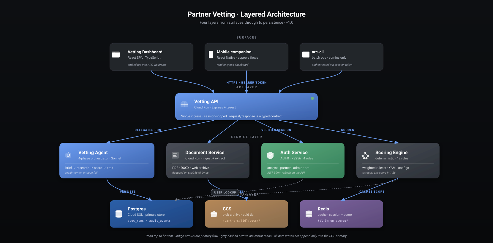
Left-to-right numbered stages with typed outputs.
stage.numbered-token with --md-tertiary fill, md-card--service-* hero per stage, and Material Symbols glyphs (schedule, function, biotech).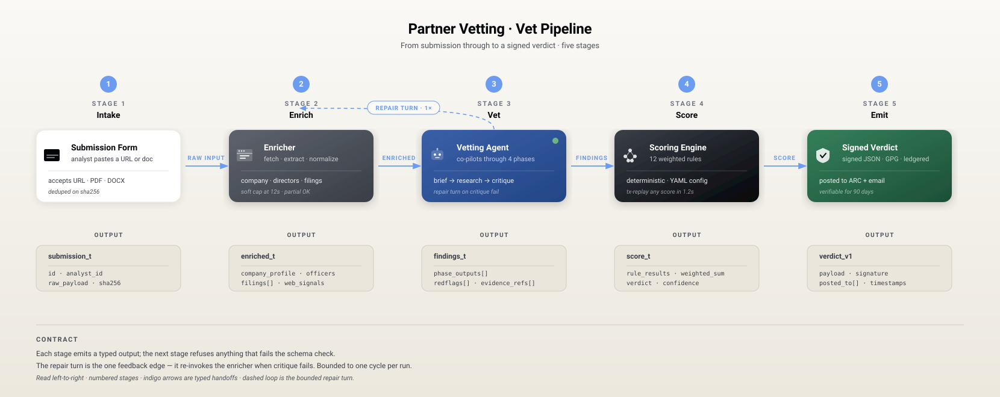
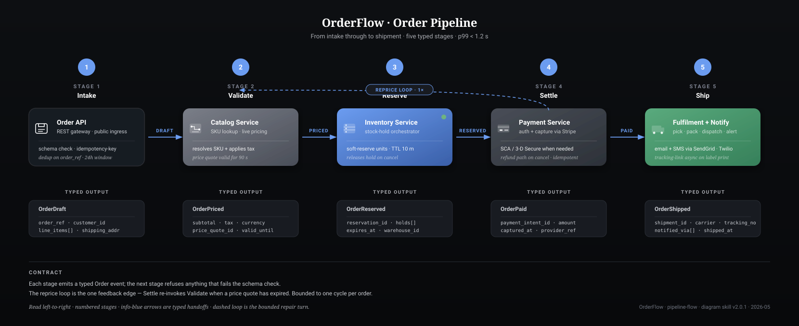
Vertical lifelines with horizontal messages between actors.
md-card--filled (240×56), lifelines as --md-outline-variant dashed, activation boxes as --md-tertiary at 0.4, with Material Symbols actor icons.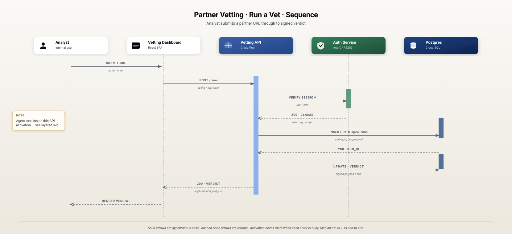
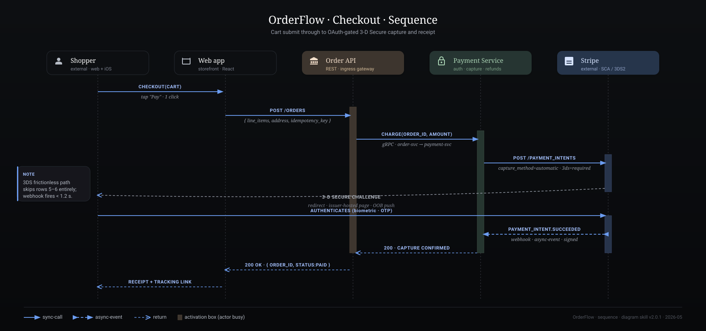
Entity-relationship diagram with FK markers.
md-card--filled, PK/FK markers as md-chip--sm with --md-tertiary-container, relationship lines in --md-on-surface-faint.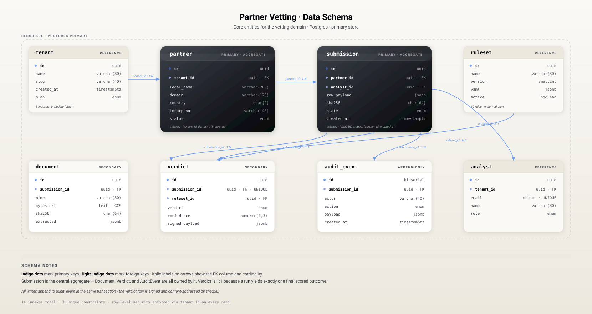
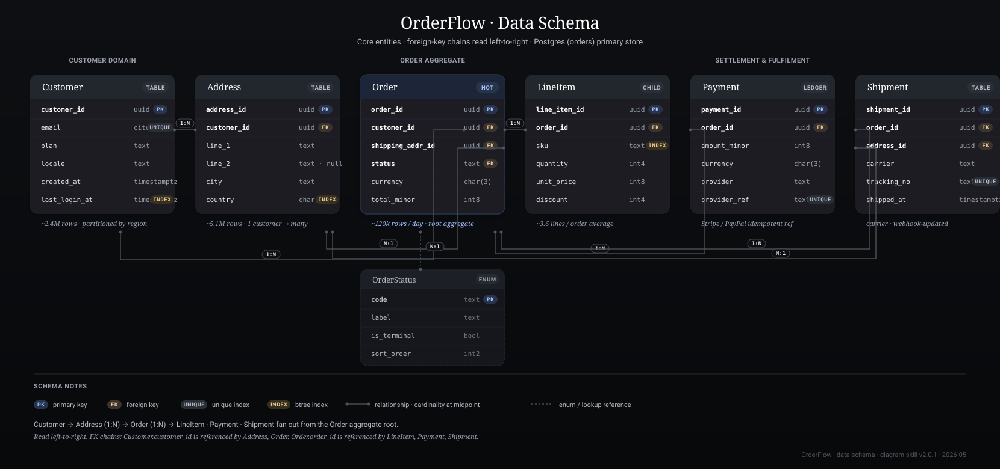
Cloud topology with regions/VPCs and categorical compute/storage cards.
group.boundary.neutral (--md-outline-variant dashed), compute/storage cards as md-card--service-* with Material Symbols, hexagon cluster nodes with proper M3 stroke conventions.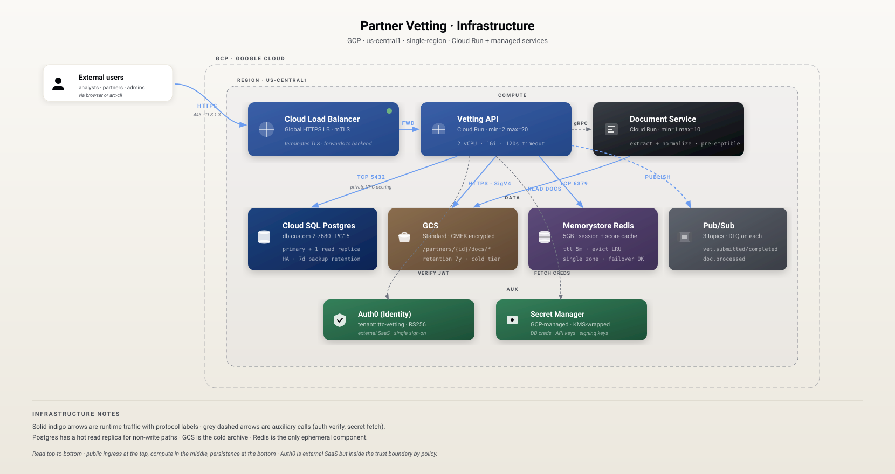
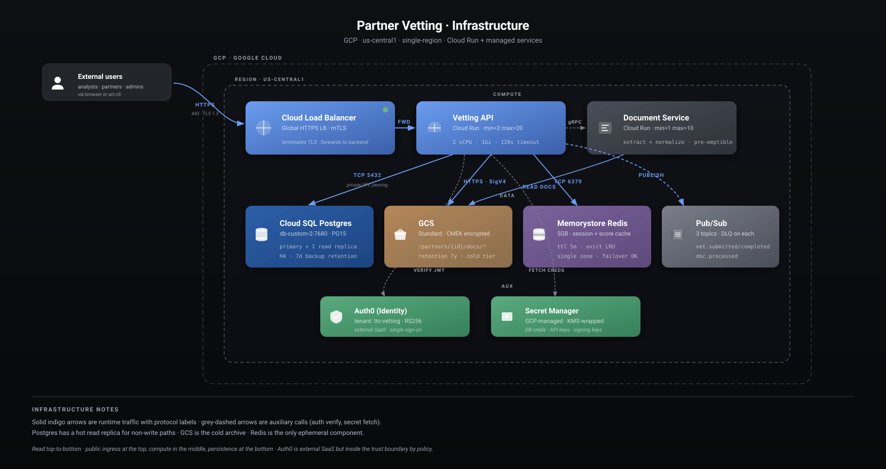
Producer → topic → consumers async-first topology.
md-card--service-slate, producers/consumers as md-card--filled, async-event arrows in --p-ok (theme-portable green).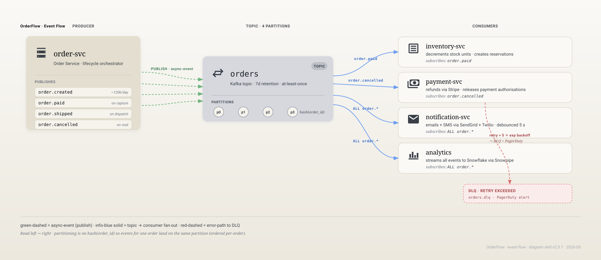
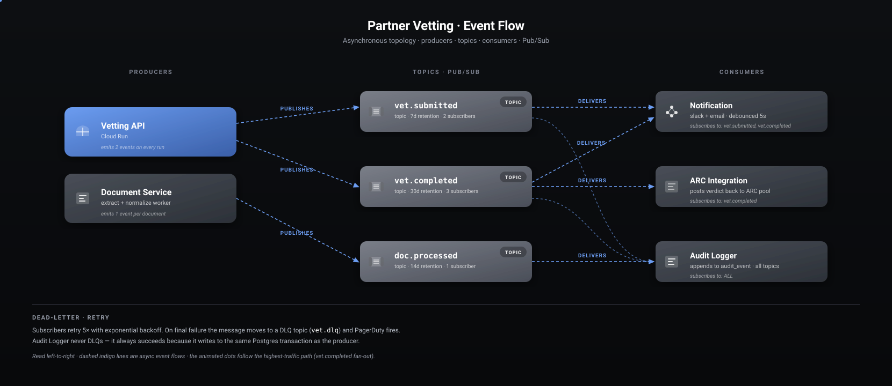
Hub-and-spoke integration map with monogram-tile spokes.
md-card--service-primary, spokes as md-card--filled with monogram tiles using the extension-host fallback pattern documented in icons §03.3.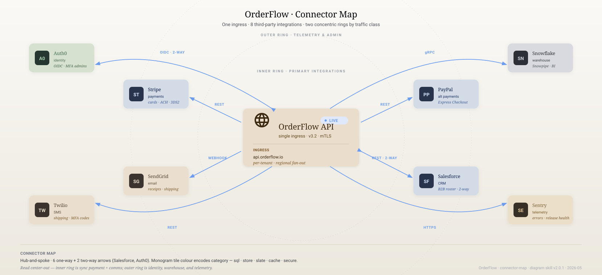
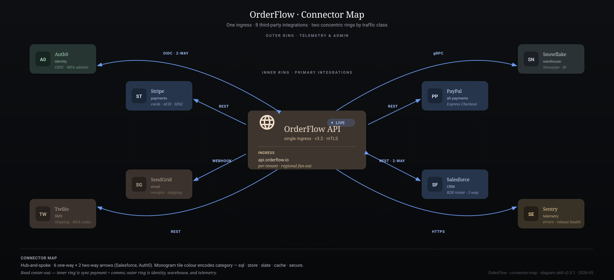
Multi-region landscape view — the catch-all template.
md-card--service-* tints and Material Symbols Outlined throughout.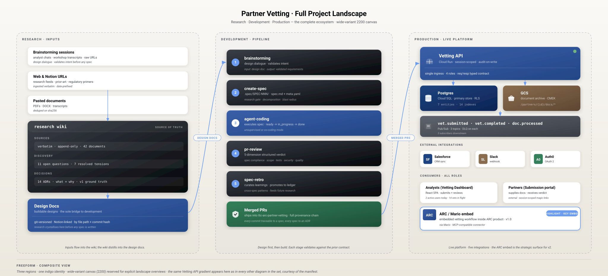
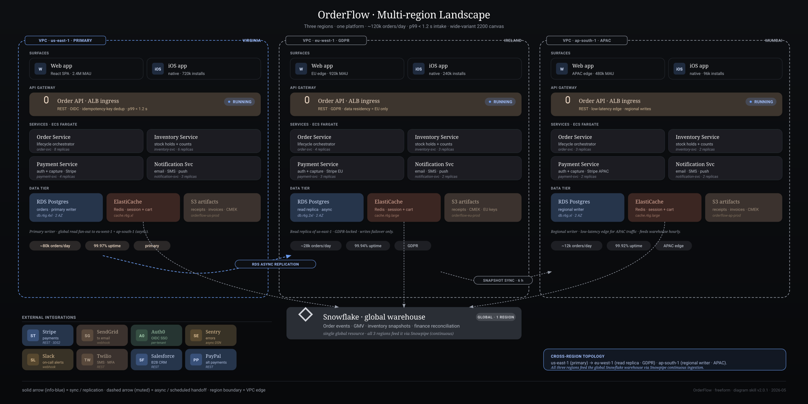
Cross-diagram consistency mechanism · mode + theme pinning.
Cross-diagram consistency mechanism
Today's SKILL.md says “read the first diagram and use it as the style anchor.” That's hopeful but unenforceable — the model has to re-derive what's anchored every time. A small manifest, authored once at the start of a proposal and persisted in the conversation, lets every later diagram look up the answer instead of inferring it.
The manifest is a closed list of the things that must be identical across a set. It does not pin layout or content — those are per-template decisions. It pins identity.
| What's pinned | Why |
|---|---|
| Service → label string | “Postgres” is “Postgres” in every figure, not “Cloud SQL” here and “the DB” there. |
| Service → surface gradient | Same gradient ID, every diagram. A service that's --surface-sql in figure 1 doesn't become --surface-neutral in figure 3. |
| Service → icon | Same icon shape — cylinder for Postgres, cloud for the CDN, gateway for the API. |
| Group → color | A trust boundary or VPC region named in two diagrams uses the same boundary stroke color. |
| Title typography | Inherited; identical position, size, weight, spacing. |
| Mode | Pinned per set — pixel (default) or material. Authoritative; per-diagram override is a hard error. A proposal renders in one design system end-to-end. |
| Theme | Pinned per set — light, dark, or both. Authoritative; per-diagram override is a hard error. |
| Animation budget already spent | If figure 1 used anim-pulse + anim-ring, figure 2 may use at most one more new class before hitting the cap. |
Plain YAML. Embed inline in the proposal's conversation or commit it as a sibling file next to the SVG outputs. The downstream skill reads it before each generation pass.
# diagram-set-manifest.yaml
set:
name: "Partner Vetting"
version: "v1.0"
canvas_width: 1660
mode: pixel # pixel | material (default: pixel)
theme: both # light | dark | both (default for proposals)
canvas_bg:
light: "#f5f1ea -> #ece8e0"
dark: "#1a1a1f -> #14141a"
services: # service → label + surface + icon, pinned set-wide
vetting_api:
label: "Vetting API"
surface: --surface-primary
icon: icon.gateway
notes: "the hero element of the proposal"
vetting_agent:
label: "Vetting Agent"
surface: --surface-primary
icon: icon.agent
dashboard:
label: "Vetting Dashboard"
surface: light # light card · white fill
icon: icon.browser
auth:
label: "Auth Service"
surface: --surface-secure
icon: icon.oauth
postgres:
label: "Postgres"
surface: --surface-sql
icon: icon.sql
gcs:
label: "GCS"
surface: --surface-store
icon: icon.bucket
redis:
label: "Redis"
surface: --surface-cache
icon: icon.cache
groups: # named boundaries that may appear in multiple figures
vpc:
label: "VPC · us-central1"
stroke: --ink-4
trust_boundary:
label: "Trust boundary"
stroke: --indigo
animations_used: # running tally — cap is 3 per diagram
- .anim-pulse
third_parties: # long tail — fall back to monogram
stripe: { label: "Stripe", monogram: "St", tile: --surface-slate }
sendgrid: { label: "Sendgrid", monogram: "Sg", tile: --surface-store }
launchdarkly: { label: "LaunchDarkly", monogram: "L", tile: --surface-secure }
Three checkpoints. Skipping any of them means a downstream diagram drifts.
on first diagram
As you build the first diagram, write the YAML. Every service you decide to draw gets a row in services:. Save it inline in the conversation or as a sibling file.
on each later diagram
Before instantiating any card, look up its service in services:. Use the pinned label, surface, and icon. If the service isn't in the manifest, add it now and propagate.
on any change
If the manifest changes (a service is renamed, a gradient swap), every diagram in the set is regenerated. The whole point is that the set is coherent — partial updates aren't allowed.
Theme is set-level, not diagram-level. A proposal is a coherent reader experience: either it ships in one theme, or it ships both flavors of every figure (the default). A per-diagram theme override is a hard error — generate the one-off outside the set if you want it.
theme: value | Output behavior |
|---|---|
| both | Default. Emit <slug>.pixel.light.svg and <slug>.pixel.dark.svg for every diagram. A 5-diagram proposal ships 10 files. Identity pins apply to both — the gradient name pins; the gradient value varies by theme. |
| light | Emit only <slug>.pixel.light.svg. Backward-compatible. |
| dark | Emit only <slug>.pixel.dark.svg. For known-dark hosts. |
Identity rules — the cross-theme pins — are theme-agnostic. The same service maps to the same gradient id in both themes. The gradient body (stop values) differs per theme via the mode's foundations.html §01.2, but the assignment doesn't.
# cross-theme identity rule
services:
postgres:
label: "Postgres"
surface: --surface-sql # same gradient ID, both themes
icon: icon.sql # same icon, both themes
# theme-pass interpretation:
# light render -> surfaceSql stops: #1e3f52 -> #162e3e
# dark render -> surfaceSql stops: #2a5e7a -> #1c4a64
# icon.sql geometry: identical
# icon.sql fill: #1a1a18 (light) / rgba(255,255,255,0.18) (dark)theme: both for the Partner Vetting setA five-diagram proposal under one manifest with theme: both ships ten files:
diagrams/
partner-vetting-context.pixel.light.svg
partner-vetting-context.pixel.dark.svg
partner-vetting-architecture.pixel.light.svg
partner-vetting-architecture.pixel.dark.svg
partner-vetting-pipeline.pixel.light.svg
partner-vetting-pipeline.pixel.dark.svg
partner-vetting-sequence.pixel.light.svg
partner-vetting-sequence.pixel.dark.svg
partner-vetting-schema.pixel.light.svg
partner-vetting-schema.pixel.dark.svg
diagram-set-manifest.yamlEvery pair shares the same layout. Every set uses the same service-to-gradient mappings. Per-pair, the values inside <defs> differ; the structure is byte-for-byte the same.
theme: on a single diagram within a set. If you want a one-off variant in a different theme, generate it outside the set or split into two separate manifests.Mode is set-level, exactly like theme. A proposal renders in one design system end-to-end — Pixel for one proposal, Material for another, never mixed. The two systems use different palettes, type families, and shadow recipes; intermixing them within a single proposal produces a visually incoherent reader experience.
mode: value | Output behavior |
|---|---|
| pixel | Default. Cream + indigo on a polished doc page. Inter type. 78-icon custom library. Files emit as <slug>.pixel.{light,dark}.svg. Use for general-purpose architecture diagrams and subject-agnostic systems. |
| material | Material 3 design system — sable + sage palette. Roboto Flex + Roboto Serif. Material Symbols Outlined icons. Files emit as <slug>.material.{light,dark}.svg. Use when the diagram should share visual DNA with an M3 product surface. |
The structural pins — services, labels, icons, groups, animation budget — are mode-agnostic by intent. A given service maps to the same surface-token name (e.g. --surface-sql) in both modes; the token's value is what differs. The diagram structure, the layout rules, the input contract — all identical. Mode swaps the rendering, not the meaning.
# cross-mode identity rule
services:
postgres:
label: "Postgres"
surface: --surface-sql # same token name, both modes
icon: icon.sql # same icon name, both modes
# mode-pass interpretation:
# pixel render -> surfaceSql stops via pixel/foundations.html §01.2
# material render -> surfaceSql stops via material/foundations.html §01.2
# icon.sql geometry: pixel custom library / material M3-style siblingmode: on a single diagram within a set. A proposal renders in one design system end-to-end; if you want both versions of the same diagram, generate them under two separate manifests (or two separate runs without a manifest).Two options, depending on workflow.
diagram-set-manifest.yaml next to the SVGs. For proposals that go through revision cycles — the manifest is durable, diff-able, and authoritative. The skill loads it from disk on each invocation.SKILL.md. That instruction relies on the model correctly inferring which decisions were intentional vs incidental — the manifest separates them: anything in the manifest is intentional, anything not in it is per-diagram.| Failure | How the manifest prevents it |
|---|---|
| Same service drawn with different gradients in two diagrams | Looked up from services.{id}.surface |
| Postgres labeled “Postgres” in one figure and “Cloud SQL” in another | Labels pinned at services.{id}.label |
| Cylinder icon for SQL in figure 1, generic box in figure 4 | Icon pinned at services.{id}.icon |
| A proposal ships figure 2 in light theme and figure 3 in dark by accident | Theme is set-level; per-diagram override is a hard error — see §07.4 |
| A proposal ships some figures in Pixel and others in Material by accident | Mode is set-level; per-diagram override is a hard error — see §07.5 |
| A dark Notion reader gets a cream-rectangle–flashed diagram | theme: both is the default; both files ship; reader picks |
| Animation cap silently exceeded by figure 3 | animations_used is a running tally; new classes append |
| Third-party “Stripe” gets a new improvised tile each diagram | Monogram + tile color pinned at third_parties.{id} |
That's the full mechanism. Small, low-overhead, and the difference between a proposal that looks intentional and one that doesn't.